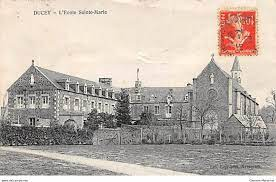

|

|
|
En réalité, il faut remonter bien avant la fondation de l’Institut en 1913, mais en 1821, à la création du petit séminaire
dans les locaux multi-séculaires de l’Abbaye Blanche à Mortain. IL faudrait citer les héroïques « pères fondateurs »,
dont l’Abbé Dary (1768-1850), dynamique et entreprenant, à l’initiative du projet, le chanoine Ameline (1817-1899)
grand bâtisseur, le chanoine Dubois (1838-1905), pédagogue et organisateur, le chanoine Godefroy (1858-1922) qui
dut appliquer les lois de séparation des Eglises et de l’Etat, fermer en plein hiver, le 13 décembre 1906 le petit
séminaire de Mortain, le replier difficilement dans les locaux de l’Ecole Sainte Marie à Ducey et lancer en 1911 la
construction de l’Institut Notre Dame, devenu lycée en 2001.
|
C’est donc à l’Abbaye Blanche, le 20 mai 1890 que fut créée l’association des Anciens. Ces derniers offrirent la statue
de la Vierge, érigée au sommet des rochers du parc. Cela se fit en grande pompe : 400 élèves et 3.000 participants
étaient réunis : Grand Messe, discours, Te Deum, procession, spectacle, banquet...rien n’y manqua.
L’association se réunit régulièrement chaque année pour une journée de rencontre fraternelle. La Messe est d’abord
célébrée, suivie de l’assemblée générale et aussi le banquet convivial, journée présidée par une personnalité, souvent
religieuse, qui prononce traditionnellement un toast et au cours de laquelle des souvenirs sont évoqués dans des
conversations animées et joyeuses.
Le président de l’association fut longtemps, à l’origine un religieux, puis alternativement un religieux et un laïc. Ainsi le
13 juin 1906, 250 anciens se réunissent à l’Abbaye Blanche, et la fête se termine en musique par le « salut à la
Blanche ».Le 13 juin 1911, à Ducey, l’assemblée est présidée par le chanoine Ameline qui, âgé ne peut faire de
discours, mais entame une vieille chanson « le champagne normand », pendant que les jeunes entonnent « la cloche
de la Blanche » et joue « les pickpockets du secrétaire », applaudis par l’assemblée.
Le 19 juin 1912 c’est dans les caves terminées de l’Institut à Avranches, alors en construction que les Anciens se
réunissent sous la présidence de Mgr Le Roy, missionnaire, supérieur de la congrégation des pères du Saint Esprit,
anthropologue, écrivain...Le 2 juin 1914, tous les élèves sont réunis à Avranches. Le chanoine Mauduit préside
l’assemblée des Anciens, et le chanoine Godefroy, supérieur exprime la satisfaction et l’optimisme général après tant
d’épreuves et fatigues. |